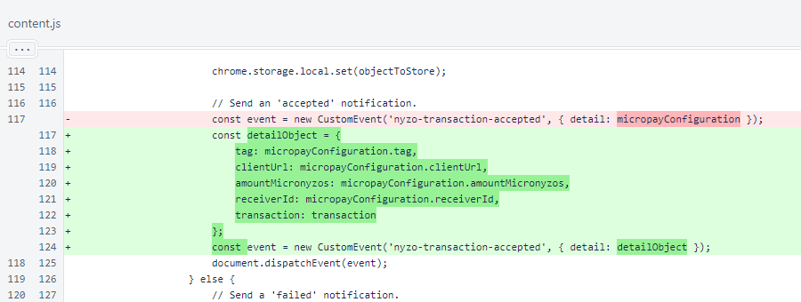

Nyzo Chrome extension version 5 (commit on GitHub) adds the transaction string to the nyzo-transaction-accepted callback for automatic transactions.
This version still does not place a rate limit on automatic transactions. Support for automatic transactions will not be submitted to the Chrome Web Store until such a limit is in place. To protect yourself if you choose to use this version of the extension, set a very small automatic transaction maximum (such as ∩0.000001) and use an account with a small balance.
In the content script, a new detailObject is created. This object contains all of the fields from the previous object, and it also contains the transaction string of the transaction that was accepted. The page can use this transaction string to query the client directly to find out when the transaction has been processed by the blockchain.
